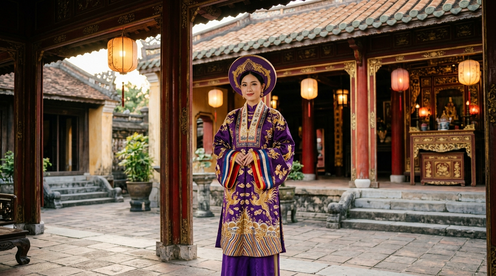
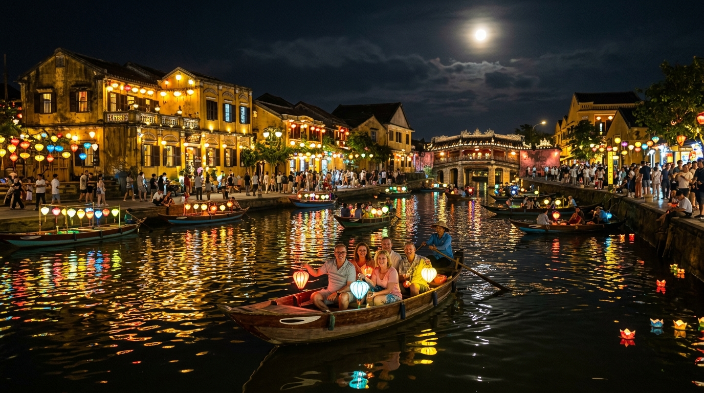
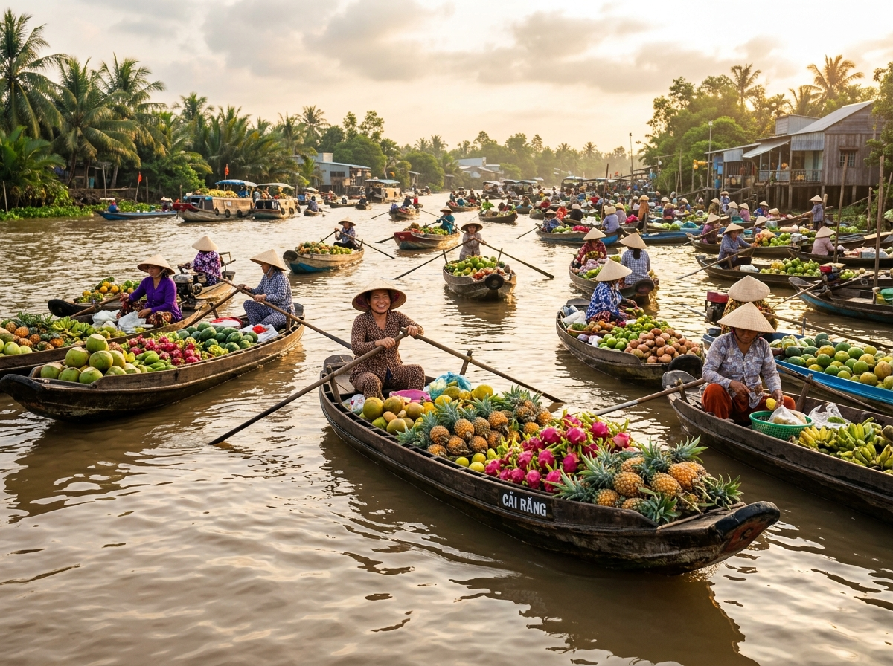
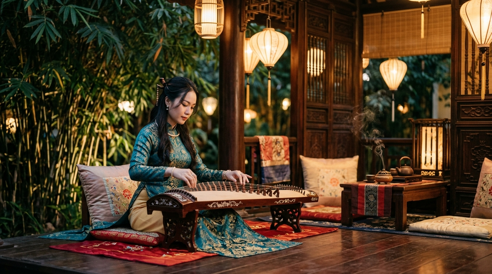

Bắc Bộ
UNESCO
Vịnh Hạ Long & Tràng An
Hàng nghìn đảo đá vôi kỳ vĩ triệu năm nhô lên giữa làn nước biếc cùng quần thể di sản hỗn hợp Văn hóa & Thiên nhiên độc nhất Đông Nam Á.
Khám phá bản sắc 4.000 năm văn hiến – Từ âm hưởng cồng chiêng đại ngàn, mỹ vị ngũ hành tinh tế đến tà áo dài thướt tha bên dòng sông di sản.
Hành trình trải dài từ non cao Tây Bắc, kỳ quan đá vôi Hạ Long, chốn hoàng cung trầm mặc cố đô đến miệt vườn sông nước trù phú.
Hàng nghìn đảo đá vôi kỳ vĩ triệu năm nhô lên giữa làn nước biếc cùng quần thể di sản hỗn hợp Văn hóa & Thiên nhiên độc nhất Đông Nam Á.

Trung Bộ UNESCOKinh đô 143 năm triều Nguyễn với hệ thống hoàng thành, lăng tẩm uy nghiêm phong thủy và di sản Nhã nhạc cung đình đỉnh cao tao nhã.

Trung Bộ UNESCOThương cảng quốc tế sầm uất thế kỷ 16-17 lưu giữ nguyên vẹn mái ngói rêu phong, Chùa Cầu biểu tượng và lễ hội thả hoa đăng lung linh đêm rằm.

Nam Bộ Văn Hóa Sông NướcĐặc trưng văn hóa giao thương thủy lộ độc đáo của Đồng bằng sông Cửu Long với những ghe xuồng chở trĩu cây trái ngọt lành và đờn ca tài tử.
Trung tâm quyền lực chính trị và văn hóa liên tục suốt 13 thế kỷ qua các triều Lý, Trần, Lê, Mạc đến thời đại Hồ Chí Minh lịch sử.

Tây Nguyên UNESCOSử thi đại ngàn ngân vang qua tiếng cồng chiêng linh thiêng nối kết con người với thần linh, đất trời qua bao mùa rẫy của đồng bào Ba Na, Gia Rai, Ê Đê.
Nghệ thuật ẩm thực kết tinh sự cân bằng tuyệt mỹ giữa Ngũ Hành (Chua - Đắng - Ngọt - Cay - Mặn) cùng nguồn nguyên liệu tự nhiên tươi sạch.
Nước dùng ninh xương bò 12 tiếng cùng quế hồi, bánh phở mềm mướt, thịt bò tươi và hành hoa thơm nồng quyến rũ.
Vỏ bánh xốp giòn, bên trong quyện pa-tê béo, chả lụa thơm, thịt nướng than, đồ chua giòn sần sật và rau mùi thơm ngát.
Chả miếng và chả băm nướng xém than hoa thơm ngát, ăn kèm nước chấm chua ngọt ấm nóng, đu đủ muối và bún lá trắng tinh.
Hạt gạo tấm thơm dẻo cùng miếng sườn nướng mỡ hành óng ánh, bì heo dai giòn, chả trứng bùi béo và chén nước mắm chua ngọt kẹo quánh.
Nước dùng cay nồng hương sả, đậm đà vị mắm ruốc truyền thống, sợi bún to tròn kết hợp cùng bắp bò, giò heo và chả cua nồng ấm.
Cà phê Robusta đắng đậm dưới đáy hòa cùng lớp kem lòng đỏ trứng gà đánh bông mịn ngọt ngào như tiramisu, sáng tạo từ năm 1946.
Mỗi nếp áo, tà lụa và đường kim mũi chỉ là cả một pho sử hào hùng về cốt cách thanh cao, phẩm hạnh đoan trang của người Việt.
Áo Nhật Bình là thường phục tôn quý bậc nhất dành cho Hoàng thái hậu, Hoàng hậu, Công chúa triều Nguyễn. Cổ áo hình chữ nhật viền dải hoa văn ngũ hành tượng trưng cho trời đất, kết hợp cùng khăn vành dây vàng lộng lẫy và đôi hài thêu chim phượng.
Cổ áo vắt chéo sang phải, tay thụng rộng rãi khoan thai, thể hiện nền văn hiến độc lập tự chủ và khí phách triều đại.
Bốn vạt buộc chéo duyên dáng trước bụng, nón quai thao thắt dải yếm đào, biểu tượng vẻ đẹp mộc mạc dịu hiền của thôn nữ.
Tiền thân trực tiếp của Áo Dài ngày nay. Năm nút cài phong nhã, đường nét gãy gọn tôn vinh sự nghiêm cẩn lễ nghi.
Quốc phục kiêu hãnh của Việt Nam trên trường quốc tế, tôn vinh trọn vẹn đường nét uyển chuyển của người phụ nữ.
Lắng nghe hồn thiêng sông núi qua tiếng đàn bầu nỉ non, nhã nhạc cung đình tôn nghiêm và không gian cồng chiêng đại ngàn.
Âm nhạc cổ truyền Việt Nam sử dụng hệ thống ngũ cung (Hò - Xự - Xang - Xê - Cống), mang tính chất ngẫu hứng tinh vi, luyến láy tình cảm như ngữ điệu trầm bổng của tiếng nói người Việt.
Chạm vào từng nhạc cụ bên dưới để lắng nghe âm hưởng mộc mạc chân thực được tạo lập trực tiếp bằng Web Audio API!
Âm bồi ngân nga, uốn lượn như giọng hát con người.
16 dây tơ trong trẻo, róc rách như dòng suối hoa.
Tiếng trống đồng, trống hội dồn dập rền vang non sông.
Âm vang đại ngàn Tây Nguyên huyền bí, trang nghiêm.
Nơi cộng đồng giao hòa với tiền nhân đất trời, gìn giữ đạo lý "Uống nước nhớ nguồn" thiêng liêng đời đời bền vững.
Mỗi đêm 14 âm lịch hàng tháng, cả phố cổ Hội An tắt điện, thắp sáng hàng vạn lồng đèn lụa và người dân cùng thả những đóa hoa đăng gửi gắm lời nguyện ước an lành trôi nhẹ trên dòng nước.
Tết cổ truyền thiêng liêng nhất của dân tộc, thời khắc sum vầy gia đình, đón chào xuân mới, thờ phụng tổ tiên và ước vọng vạn sự hanh thông.
Quốc lễ tri ân công đức các Vua Hùng dựng nước Văn Lang tại núi Nghĩa Lĩnh, Phú Thọ. Biểu tượng tối thượng của tinh thần đại đoàn kết toàn dân tộc.
Tết thiếu nhi và ngày hội sum họp rộn rã tiếng trống múa lân, rước đèn ông sao ngũ sắc dưới ánh trăng rằm tháng Tám trong trẻo dịu êm.
Thả chiếc hoa đăng gửi gắm lời nguyện ước an lành và thử thách vốn kiến thức văn hóa dân tộc của bạn.
Hàng trăm làng nghề thủ công trăm tuổi khắp mọi miền tổ quốc lưu giữ hồn cốt tinh xảo của cha ông.
Dòng men rạn cổ, men lam tinh tế được nhào nặn từ đất sét phù sa sông Hồng qua bàn tay người thợ gốm tài hoa.
Lụa tơ tằm mềm mại, ấm vào mùa đông và mát rượi vào mùa hè, từng được tiến cống phục vụ vua chúa triều đình xưa.
In trên giấy điệp óng ánh bằng vỏ sò biển, màu sắc tự nhiên từ cây cỏ: vàng hoa hòe, đen than rơm, đỏ gỗ vang.
Chiếc nón lá trắng tinh khôi khâu bằng lá lụi tỉ mỉ với 16 vành tre uốn lượn tôn vinh nét dịu dàng người con gái Việt.